Japanese-style Live Actions is a relatively perfect Live Actions system based on the basic structure of J-POP,which can make everyone become a partcipant in Live and create better visual and auditory effects for Live. This handbook is written with the purpose of “Feeling Live’s Charm and Promoting the Spirit of Assistance”.
日式应援是以J-POP基本结构为基础的一套较完善的应援体系。能让每一个人参与进Live,为Live创造更好的视觉与听觉效果。本手册以”感受Live魅力，弘扬应援精神”的宗旨编写。
日式応援とはJ-POPの基本構造に基づいて、比較的完璧な応援システムである。このシステムを通じて一人一人がライブの中で盛り上がられるのはもちろん、ライブにより良い視覚と聴覚の効果を与えることもできます。本 マニュアルは「ライブの魅力を感じて、 応援の精神を発揚する」っていう趣旨で作ります
本手册可以分成3大部分：
- 应援历史、概念等相关概述
- 具体应援方式教学
- 案例分析
一:应援&日式应援概述
1.1 何为应援 (応援って何に？)
Live上的应援是通过一系列行为为台上加油鼓劲，同时为Live创造更好的视觉与听觉效果，也使自身融入Live的一种方式。
応援の意味はすごい広くて，スポーツ大会中で選手たちへの叫び声も、
1.2 为何应援 (応援はなんのため？)
应援的原因有很多。最主要的原因有两个
（一）“感受Live魅力，弘扬应援精神”:这是最本质的原因。通过应援，使自己融入Live,为Live创造更好的视觉与听觉效果。同时也将其他人带入Live的氛围中。一场相对完美的Live既需要台上的努力也需要台下的努力。
（二）表达自己的信仰:最直接的原因即是表达对idol的信仰。当表达得过于疯狂，而做出不当举动时。则被称为“厄介”。
（附：英和词典对厄介的解释）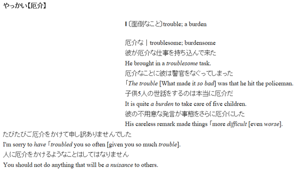
1.3 日系偶像文化及其历史
此部分参考
https://en.wikipedia.org/wiki/Japanese_idol（《维基百科-Japanese idol》）
https://ja.wikipedia.org/wiki/アイドル（《维基百科-アイドル》）
以及
https://www.jianshu.com/p/757be63ba102《偶像的历史意义》）
制作
要讨论偶像的社会角色和历史意义足以写一篇长篇论文，因此这里仅进行简述。
1.3.1 偶像的角色
霓虹的”idol”与国人所认知的idol并不是同一个概念。日本idol是个特殊的职业，也是一个极其独立的职业。他们既不是歌手，也不是舞蹈演员。但也可以既是歌手，又是舞蹈演员。虽然idol主要工作是唱歌与跳舞，但也不止唱歌与跳舞……
偶像这个职业在日本之所以能发展得如此高度职业化，很大程度上就是因为分离出了区别于一般歌手和演员的独有特质.
其通过多样的艺术形式展现着其自身的魅力。无论是通过怎样的艺术形式，偶像必须要有可互动性和反馈性，一定要能对观众产生实质性的共鸣和激励。
1.3.1.1 偶像存在的意义
在此提出一个问题:偶像存在的意义究竟是什么?
其歌舞水平既比不上专业的歌手，也比不上专业的舞蹈者，演技也比不上专业的演员……
为什么偶像能够在日本这个国家里成为一个特殊的，独立的职业呢？而且需求十分之大。
有调查表明。平均4000人里就有一个人能找到偶像作为伴侣。可以看出，在霓虹偶像这个职业的人数之多。但大部分为地下偶像（即少有媒体曝光甚至没有媒体曝光的idol）
一个独立职业的存在，必然有相应的社会需求作为支撑。
那么为什么，这样看起来一无是处的角色，在社会中会有如此大量的需求呢？
这里就要讨论偶像存在的意义了
对于偶像存在的意义，每个人的看法或许都各不相同。也没有一个很统一的说法。
在我看来偶像是一个给周围的世界带来温暖和希望的角色(出自某小偶像的口中，具体是谁忘记了)
在某日综中，主持人问过一个小偶像，其认为作为偶像，最重要的是什么。
那个偶像的回答是“笑顔”。这也说明了，偶像是给予人们希望与积极的想法的角色。
因此可以发现，日系偶像曲子，大多数都为积极，欢快的曲子。就算是悲伤的曲子，表达的也是积极的思想。
2011年3月11日。日本东北地区外海三陆冲区域发生了有观测记录以来最大规模的一次地震，高达9级的地震引发了同样创纪录的日本史上最惨烈的海啸灾害。这次噩梦般的巨型灾难共造成的死亡失踪总人数高达2.2万，并且直接导致了更为可怕的福岛核电站泄露事故，其带来的后续灾祸影响至今仍未消散。
下面就以这个案例来分析偶像的社会意义。（或许没有比这个更好的示例了）
[以下内容为转载]
“在悲剧方面，人总是相信只有自己是观众。某一天，当被通知‘这次的主角是你’时，才会明白自己只是观众这种想法是没有任何依据的。” ——《象之背》·秋元康
在地震发生以后，AKB48在第一时间就中止了预定于3月14日举行的“跟随着Takamina（高桥南）”演唱会，并迅速启动了一系列赈灾企划。这个计划叫做“誰かのために”，除去专项的募捐和义演活动，AKB48还会从常规收入中拿出固定比例的资金直接用于援助救灾工作，所有印制有该计划Logo的周边商品，收入的一部分都会被用作善款。(至今开闭的所有有包装的周边上仍有该LOGO)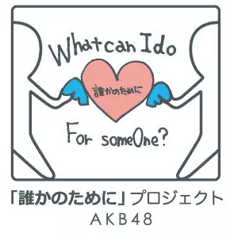
在最初最混乱的时期，AKB运营方没有贸然选择去灾区添乱，只是通过筹集善款的方式间接为救灾工作出力。一直等到五月份，灾区情况基本稳定以后，此时灾民们最需要的已经不是救援力量，而是精神层面的抚慰，AKB48才开始陆续前往各大灾区进行慰问演出。抵达灾区的AKB48成员全部身着素色的T恤以示肃穆，但是演出歌曲却并没有刻意追求煽情，她们站在灾民面前，依旧是面带笑容地全力演唱着《Heavy Rotation》这样充满欢快激情的歌曲。令人意外的是，灾民们的反应也同样非常积极，每一次演出时台下都会出现热情的应援和大声欢呼，握手会和各种交流活动的气氛也非常温馨融洽……这样的情形令许多媒体都惊诧不已——为什么这群唱唱跳跳的偶像，在充满悲伤氛围的灾区却受到了如此热烈的欢迎？在活动过程中，AKB48的每一个成员都表现出了极高的职业素养，一直以来通过握手会与粉丝们面对面交流的经验在这种场合发挥了作用，她们从头到尾没有任何不当的举动，井然有序，肃然专注，却又温柔真诚，治愈人心。其实成员们也都只是一群普通的小女孩，也都被灾区的惨状所震撼，会感到难受和害怕。但是只要面对灾民，她们每个人都能控制住自己的情绪，拿出最真诚的笑容，用最温柔得体的方式去鼓励对方。或许这才是赈灾义演应该有的样子——每一个灾民的心情、心态和个性是不同的，不能指望所有人都会跟着热闹欢乐的演出一下子变得开心起来，肯定还是会有受伤的人沉默着，悲伤着。但是身为演出者，在这样的时刻，就应该全力以赴地燃烧起自己去呈现最热情的表演，这种坚定绽放的乐观与不合时宜的搞笑是完全不同的概念。台下的观众越是悲伤，台上的人就越应该让受伤的人看到世界上依旧有着充满激情的美好事物，这才是对于灾民最大的尊重和慰藉。
日本一直都是一个非常矛盾的民族，国民在日常人际交往时显得等级森严、强调“不给别人添麻烦”、年功序列制的冰川社会无时无刻不散发出自私冷漠的氛围；但正因如此，日本人有时候又显得非常“中二病”和感性，坚信八百万神明万物有灵，崇尚幻想和热血，很容易被精神层面的事物所感动和激励。早在三十多年前的经典动画《超时空要塞Macross》里，歌姬们就能靠着歌声左右宇宙战争的走向，甚至感化外星敌人。他们热衷于把甜美温柔的偶像与冷酷硬朗的机器人大战放在一起，也正是出于对这种将“用爱发电”真正具象化表达的青睐。偶像这个职业在日本之所以能发展得如此高度职业化，很大程度上就是因为分离出了区别于一般歌手和演员的独有特质，无论是通过怎样的艺术形式，偶像必须要有可互动性和反馈性，一定要能对观众产生实质性的共鸣和激励。在这样一个“高语境文化”的国家里，非追星族本来是很难理解所谓偶像的魅力的——他们不可能去深入了解每一个偶像本身，以及他们跟粉丝之间互动的故事，从而不会明白单个偶像对于个体粉丝的重要性，不明白粉丝在面对偶像时为什么可以如此直白狂热地表达自己的情绪。当这种羁绊局限于个体之间时，偶像就注定是一种小众文化，所谓唱唱跳跳的偶像活动确实就只是一种边缘化的文化符号；而只有当偶像作为一个整体概念，真正参与到社会活动中去，人们才会感受到对于整个文明社会而言，有这种艺术符号形式、有这样优质偶像的存在，是一件多么难能可贵的事情。
所有需要与人互动的社会性职业都是如此，偶像自然也不例外。平时他们只属于可有可无的娱乐消遣，但在这种时刻却成为了证明社会还没有崩溃、生活仍然要继续的有力标志。正是因为天灾太过令人绝望而痛苦，在强大的自然面前人类个体太过渺小，所以灾民们才会迫切需要看到象征着希望的、年轻而充满力量的生命，来证明作为人类种群集体的羁绊与团结的力量。偶像个体在演出时收获着台下粉丝的应援，而当偶像作为社会团体出现在这种场合时，就化身成为了灾民最需要的，能够带去治愈和激励的一方。1995年的阪神大地震后，出演《music station》的SMAP紧急取消了新歌发表，而是换上黑色的西装演唱了那首《がんばりましょう（加油啊！）》，并启动了一系列公益援助活动——这就是真正的国民团体所谓“国民性”的体现，也是职业偶像积极的社会意义所在
偶像守着的人类最为幼稚却骄傲的部分——所谓偶像就是会带着一点中二特质，充满活力的年轻生命，蓬勃四溢的青春热血，告诉人们任何时候都可以笑着活下去。不需要被刻意赋予任何多余的煽情主题，就像地震后废墟里出现的一颗小小嫩芽，它的存在本身对于历经苦难的人民而言就胜过了千言万语。随着文明和社会的发展，当基本的衣食住行被满足之后，人民精神层面的需求势必会凝结出相应的寄托物。因此，广义上偶像概念的历史其实比人们想象的要久远得多——这种形式伴随着百万年前原始图腾偶像崇拜和部落组织的集体共情而诞生，在漫长的人类发展历史中从未消逝，反而一次又一次地以各种形式鼓舞着这个社会性物种迈过了那些可怕的难关和挑战。
偶像的意义绝不是建立在那些虚浮的剧本和小圈子内部的自我感动里，而是要让所有人看到，偶像在接受了大众的应援之后，一定会以这种堂堂正正的方式回馈和反哺社会。
“如果神明真的存在
请为这片土地再开辟出全新的世界
即便如此风依然在吹
生命的气息在拂过脸颊
……
即使眼泪无法避免
我也愿意为此有所担当
我不要做旁观者。”
——《風が吹いている》
这就是发生在那个2011年的故事，日本多年以来冷漠的“无缘社会”第一次因为这样的天灾而产生了松动，AKB48的表现就是那场让普通民众前所未有地团结在一起的大赈灾活动的注脚和缩影，自此官方视角也开始正视起这个以“面对面”为核心主题的偶像团队所传递出来的积极价值观和社会意义。
该年在偶像历史上，也称为”日本总AKB化之年“ ，该年刚经历过偶像冰河期不久，该年后偶像市场也逐渐回暖。出现越来越多的偶像团体。
1.3.2 偶像的历史
【起源】
1940年代称为「女学生のアイドル（bobby-soxer’s idol）」出现，开始出现idol概念
对于日本来说最初「アイドル(idol)」主要用来称呼国外艺能人
1970年代に至り、未成熟な可愛らしさ・身近な親しみやすさなどに愛着を示す日本的な美意識を取り入れた独自の「アイドル」像が創造された。
到了1970年代，对 未成熟的可爱·切身且容易亲近等特征的留恋被引入了日式的审美意识，在这样的审美意识下独特的「偶像」形象被创造了。
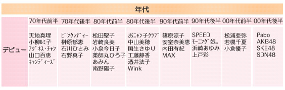
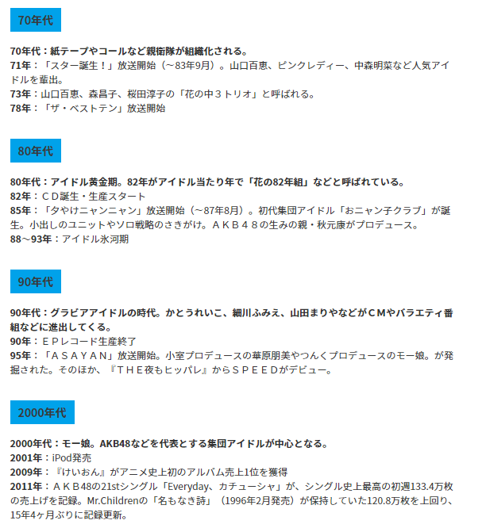
近年来还出现了各种二次元偶像、声优偶像等。
如《Love Live!》《偶像大师》
1.3.3 Call的历史
1.3.3.1 MIX的历史
MIX是CALL的一个种类。具体内容和使用方法后面介绍。这里先说说其历史
【MIXの歴史】
MIXを作ったのはEVELという五人の男たち。
そのなかの「黒服」「ゼンキョウ」の二人が中心となり生まれた。
彼らが日常生活や旅行などで高まったときに思わず発した言葉を混ぜたのでMIXと呼ぶ。
MIXを打つ人のことをMIXerという。1990年代初頭にイングヴェイ・マルムスティーン、アンスラックスなどの
ヘビメタ／ハードロック系のライブにおいてEVELたちがMIXを使い始め、
やがてアイドルライブにも用いるようになった。
当時はまだ現在のように体系化されていなかったので、
文字通り気持ちが「タカまった」ときに思わず叫ぶコトバだった。はじめてアイドルの現場で用いられたのは1993年のアイドルグループ「MELODY」において。
その後、東京パフォーマンスドールやZ-1(上戸彩が所属)、また地下アイドルライブなどで広まっていった。1999年12月にリリースされたZ-1の2ndシングル「You Your You」のテレビ映像に、
当時使用されていたMIXを加えた動画がニコニコ動画で視聴できる。
http://www.nicovideo.jp/watch/sm1925287MIXを受け継いだのは「マスターあめまる」と北海道の二代目「園長」
そして「園長」が北海道でZONEヲタと出会い、
ZONEライブでMIXをやり始める。
そして園長からMIXを伝授された直系である「EDEN」「マサーシー」「パパ」「ピカ(-∀-)」たちが
ZONE、Bon-Bon Blanco、SUNFLOWER(広島の地方アイドル)などのライブでMIXを打つようになり、
MIXを世に広めていった。
みんなの憧れ「MIX号令発動」である「よっしゃいくぞ〜！」はSUNFLOWERヲタの「パパ」が始めた。
もともとは「っしゃあ行くぜ〜っ！」だった。
その後「ばか師匠」などのMIXerによってAKB劇場に普及していった。以上、MIXの歴史。
【翻译】
制作MIX的是叫EVEL的五位男士，其中以「黒服」「ゼンキョウ」两位为中心制作而成。他们在日常生活或者旅行之类的时候，情绪上来时就会把一些不经意想到的词语混合起来。于是称作MIX。呼喊MIX的人成为MIXer
在1990年代初，在イングヴェイ・マルムスティーン、アンスラックス之类的重金属\硬摇滚Live上。EVEL首次使用MIX
不久后在IDOL的live上也开始使用了
因为那个时候的MIX还不像现在一样体系化，只是在情绪高涨时不经意地喊出来。
MIX首次在偶像Live中使用是在1993年的偶像团体「MELODY」的LIVE中
在那之后MIX在东京パフォーマンスドールやZ-1(上戸彩が所属)还有地下idol中流传开来
在1999年12月にリリースされたZ-1の2ndシングル「You Your You」的TV映像中、可以看到加上了当时使用的MIX的niconico动画
http://www.nicovideo.jp/watch/sm1925287
之后对MIX进行发展的是「マスターあめまる」和北海道的二代目「園長」。然后園長在北海道与ZONE的WOTA(日语为御宅之意)相遇,之后ZONE的live上也开始使用mix.
然后園長直接传授MIX于「EDEN」「マサーシー」「パパ」「ピカ(-∀-)」等。MIX开始在ZONE、Bon-Bon Blanco、SUNFLOWER(広島の地方偶像)之类的live上使用。MIX在世上流传开来
大家喜欢的「MIX引导信号」——「よっしゃいくぞ〜！」是从SUNFLOWER的一个wota，名为「パパ」那开始的。
实际上最开始是「っしゃあ行くぜ〜っ！(sshaikuze~)」だった。
在那之后「ばか師匠」之类的MIXer将MIX在AKB劇場中普及。
以上就是MIX的历史
【MIX的意义】
传闻MIX的内容来源于一首诗
虎の如く火の如く人の造らざる繊細な心も維新となれば海を飲み女を喰らふ
その振動を心の有るがままに化身し本来繊細な心を飛ばし刹那に思ふがまま除き去る
これ己に忠実
刹那な刻の流れに身を任せるのみ
これこそタカまりの心髄なり
将一些词语抽出后，就成了MIX的主体部分:
虎、火、人造、繊維、海女、振動、化繊飛除去
[参考资料]
「ピカ(-∀-) 」さんの『「當山奈央の歌を聴きたいから生きる」忍足(-∀-)の日記』
http://d.hatena.ne.jp/rina_miyawaki/20050330/
「いぬいぬ」さんのブログ『はろぶろ。』
http://d.hatena.ne.jp/helloblog/20080203/p1
http://d.hatena.ne.jp/helloblog/20080324/p3
「おしゃむ」さんのブログ『北の狼、南の熊』
http://d.hatena.ne.jp/osham/20080320/1206036494
「オーガ」さんのブログ 『僕は矢島舞美が好きなんです。』
http://d.hatena.ne.jp/greatmaimi/20080321/1206114280
「夜魔皇」さんの『夜魔皇日記』
http://d.hatena.ne.jp/yama_kou/20080321/p7
mixiのミックス[MIX]コミュ
http://mixi.jp/view_community.pl?id=507582
1.3.3.2 CALL的相关研究与历史
对call的相关研究文献较少。
http://hajime-semi.jugem.jp/?eid=651「コール」への興味――「どのように」から「なぜ」へ
《明治学院大学 文学部芸術学科 芸術メディア系列のゼミ》
http://www1.meijigakuin.ac.jp/~hhsemi15/member/cherry/mokuji_youyaku.html ——《How Idol Otakus Perform the“Call”? : Types in Berryz Kobo》
以下内容为对《「コール」への興味――「どのように」から「なぜ」へ》这篇文章的部分翻译与简述
call是指在LIVE中共同呼喊的口号(大多为御宅族使用).live中的wota们不是互相认识，但是却能统一全体的call声。这种感觉非常舒适。该论文作者从这个现象引出疑问，某些演唱会（如歌剧中）大声呼喊是不被允许的，为什么在御宅类的Live上会被容许？之后论文作者在暑假中对偶像的历史已经call进行了相关资料的收集与调研。但是虽然许多文献中有对偶像的研究，但是以御宅行为为中心进行研究的文献几乎没有。
于是作者开始在live等现场进行实地调研。弄清楚了各种call呼叫的时机与动作。之后对wota是如何打call的的实例进行整理。
在10月之后作者转换了方式，寻找御宅们是如何接触到call的，同时访问了5个偶像的live,分别为AKB48、仮面女子、早安、私立恵比寿中学、’15。
之后作者有了新的发现
比如’15的live会喊「L・O・V・Eラブリー○○（名）！」这样的成员call。类似的call在AKB48中为「超絶かわいい○○（名）！」、私立恵比寿中学中为「いけいけ○○（名前）！」、でんぱ組.inc中为「お！れ！の！○○（名前）！」
同时作者发现了新的类型的call——MIX与口上. 作者对此感到很不可思议。这些call到底是谁想出来的?又是怎样传播给御宅的?
(由于找不到该篇论文的完整版本，且相关文献实在过少，只介绍到这)
二:开始之前
2.1 了解日式应援体系:
日式应援大体分为三种模式：
①打Call:即普通地挥棒与呼喊，这也是最普遍的应援方式。本文将重点介绍这种方式。
②Wota艺(指狭义上的wota艺指光棒艺，广义上的wota艺包括很多,广义上的WOTA(ヲタ为御宅之意)可以指御宅在LIVE中所作的一切应援行为)
③手指艺:一种早期的空手应援方式，多见于三次元idol的应援
值得注意的是，光棒艺与手指艺因幅度过大，会对live产生一定的干扰，因此现已基本退出较正式的Lve场合。多见于应援团私下娱乐，以及特殊场合或企划录制等，地下idol剧场中也较为常见。
2.2 应援棒的选择:

(1)电棒:
电棒的特点为:亮度一般适中(也有高亮电棒),持续时间长,结构设计适合长时间挥舞。于是这些特点决定了电棒非常适合用于打Call。当然某些特殊的电棒也适合打艺。下面列出一些电棒的具体信息：
①KBX II\III:KBX是著名的电棒品牌，稳定性强，抗摔，亮度适中。适合打call.若想打艺也可以使用短棒头（棒头是可换的）但不建议用kbx打艺，KBX III比II多了手机调色功能。价格也更贵。一般250R左右。KBXII 170-200即可。
②PL\CL：单色高亮电棒。使用8号电池。亮度极高，较轻，适合打艺。不适合打call.价格较便宜。PL为20-30R/根
③PENLaUO(电UO)：单色高亮电棒，可以瞬间亮棒，使用4节7号电池。亮度极高，满电状态下可对抗化学棒ARC极橙，因结构设计原因，不会感觉到重。适合打艺，若能忍受不能变色，也可用于打尻（手感还是挺不错的）。
④Lumica 与kbx差不多。同样是著名品牌，lumica的变色按钮相对kbx设计得更合理。亮度与kbx相差不大。适合打call.
⑤光羽星：类似KBX的较便宜的电棒。一般来说100R左右。
(2)化学棒:
亮度一般来说较高。持续时间短，轻。不怕坏，一次性，适合打艺。以秒计费地烧钱。一般用于正式场合打艺使用。(当然，土豪整场live化棒打call也是有的)
①ARC：最出名的高亮化学棒，也叫大闪光。分为普通系列\极系列\EX极。亮度依次递增，持续时间依次递减(分布为15分钟，3-5分钟,30秒) 价格相同。均为7元/支
②river roots(RR) ③brightglow ④犀利光：可以说是最便宜的可以打艺的化棒。一般1-1.5R/根。持续时间从2min-12h不等。持续时间越长的种类亮度越低（其中绿色亮度最高）。
以上仅对各类棒子进行粗略介绍，总而言之就是:
①只想打尻=>预算充足的话kbx/lumica随便选，若预算不充足则光羽星
②只想打艺：
1）若想用电棒：PL\CL\电UO，以及lumica一个百元的新产品都可以.
2)若想用化棒:准备2种化棒，一是练习等一般场合用的犀利光，二是ARC等较贵的化棒，用于正式场合。
③既想打尻也想打艺:这种情况比较复杂。
有很多解决方案
1)若能忍受不能变色可以直接上电UO。（电UO只能通过换棒头变色）
2)不能忍受不能变色：短棒KBX或Lumica
3)准备两种棒子。一对用来打尻，一对用来打艺。具体参照上面介绍。
4)能忍受不能变色且预算不足也可以考虑pl(不过pl\cl的结构设计来说，更适合打艺，打call会有些不舒服) ，不能忍受不能变色也可考虑光羽星
2.3 熟悉日系歌曲结构（J-POP歌曲结构）
任何应援方案都是基于下面的歌曲结构进行，请务必理解、熟悉，并在之后的实际应用中熟记并掌握。
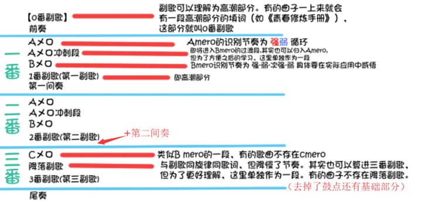
（本表参考https://ja.wikipedia.org/wiki/A%E3%83%A1%E3%83%AD （维基百科-J-POPの基本構成）制作）
以上即为日系歌曲的基本结构。有的曲子比较特殊，会有些细节不太相同。但大体结构不变。
为了熟悉上面的结构，可以试听几首歌，并分辨出其结构。
（本表参考于维基百科制作。可能和其他一些教程中的表有所不同。
【备注】
1)Amero冲刺（Aダッシュメロ）段本表单独列出，其他教程一般算进Amero。
2)降落副歌(落ちサビ) (本表单独列出，其他教程一般算进3番副歌）
各構成要素は省略されたり、順番が異なる場合もある。（也存在组成要素省略、顺序不同的情况）
【具体解释】
①0番副歌：部分歌曲一上来就是一段和高潮部分填词相同的部分，然后才进入前奏或Aメロ.这部分即称为0番副歌。
②Aメロ：前奏或第一间奏后会先进入的部分。节奏为【强弱】循环
③Aメロ冲刺段：衔接A Bメロ的一个8拍
④Bメロ：Aメロ后的部分。可以说call起来最带感的一部分。节奏为【强 弱 次强 弱】。
⑤副歌：也就是高潮部分
⑥Cメロ：部分歌曲会有的部分。节奏与Bmero差不多。也称<大サビ>
⑦降落副歌：大部分歌曲会有的部分。相比1、2番副歌，因降缓了ドラム(鼓点)还有ベース(base)其节奏有种缓慢的感觉。因此此处的挥棒方式一般为”上升气流(具体操作之后解释)”
【附加】
一般来说
1番与2番除了填词，完全相同.
1番和3番填词相同。但由于Cmero、降落副歌的存在。以及要收尾。因此不同点很多
所以一般演唱会中，为了节省时间，不能唱完整版曲子时。剪辑方案一般为【减掉2番，留下其他部分】
2.4 常见应援装备介绍
即使没有装备也可以使用“手指艺”进行应援，最基本的应援装备就是一根应援棒。下面介绍一下常见的应援装备。一般来说只需应援棒即可进行应援。其余装备感兴趣的话可以购入。但不建议使用过多的装备。
① 应援棒：这里不多做介绍
② 应援毛巾：有大尺寸的与小尺寸的。小尺寸的可用来挥动应援（如angela的《Shangri-La(毛巾歌)》需用上毛巾应援。需要使用毛巾应援的曲目极其极其极其稀少），或绑在头上，或披在脖子上
③ 应援护腕：顾名思义就是套在手腕处的东西。
④孔雀：可以让你持握多棒的神器。拿上瞬间有dalao的感觉。但是除了引人注目外实用性不大。更多是找累（打个PPPH都困难）孔雀更多的是自己DIY。可以自己绘制图纸，然后定制亚克力模型。
⑤光剑袋\包：即容纳应援棒的东西。一般可以系在腰上。
⑥法披：一种日式披风，披上看起来还是不错的。
⑦应援扇
三:具体应援教学
3.1 基本挥棒动作:
图中红色曲线表示发力划出
1） 平敲：一般用于副歌，或其他一些鼓点较密集的地方。为8/8(即一个8拍敲8下)。
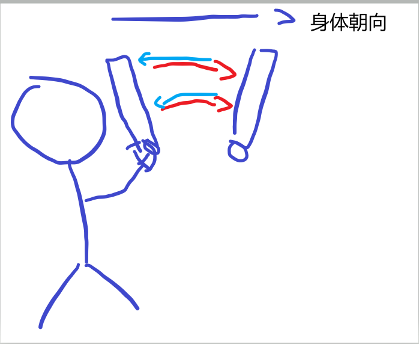
如图,一个来回为一组。
一个8拍8组
【发力描述】红色曲线为发力曲线。即发力向前划出。然后类似图中蓝色曲线那样自然弹回
2） 前挥：:轨迹与平敲相同，也可以理解为平敲4/8(每两拍前挥一次)，2/8.即带有一定停顿的平敲。
作用十分巨大，比如用于卡拍，特殊节奏段等。GT警（后面会提到）报的前两下hai也需要用上4/8版的前挥
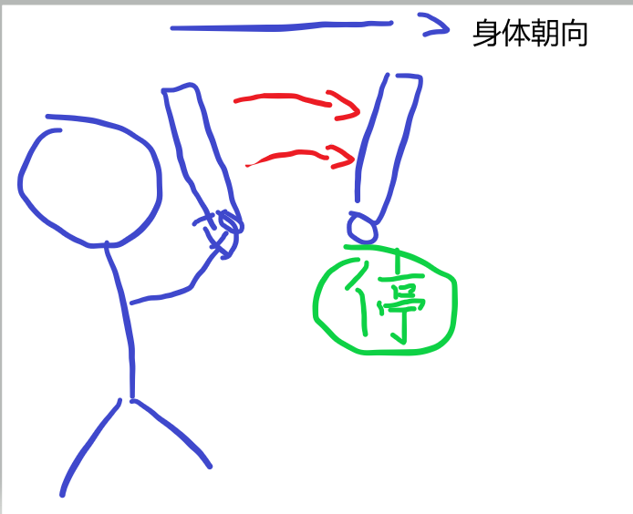
【发力描述】红色曲线为发力曲线。即发力向前划出。之后停止。等待。
下面列出一个8拍内的操作：
|类型/拍子序号 | 1 | 2 |3 | 4 |5 | 6 |7 | 8 |
| :———— | ————:| :—: |
| 4/8 | 挥出| 停 |挥出| 停 |挥出| 停 |挥出| 停 |
| 2/8 | 挥出| 停 |停| 停 |挥出| 停 |停| 停 |
3） 上击（前击）：向前上方击出。一般与喊Hai的call配合，或者歌词call\回应性call时配合使用
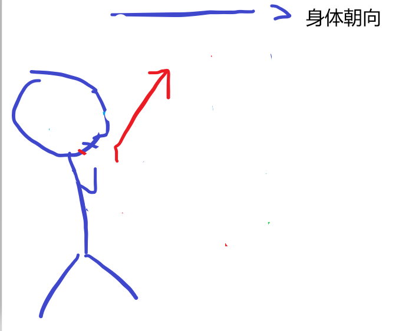
4） 上升气流：一般用于节奏缓慢部分、鼓点不明显部分。特点是可以进行比较缓慢的滑动
比较常用的为2/8或1/8.即一个8拍2组或1组
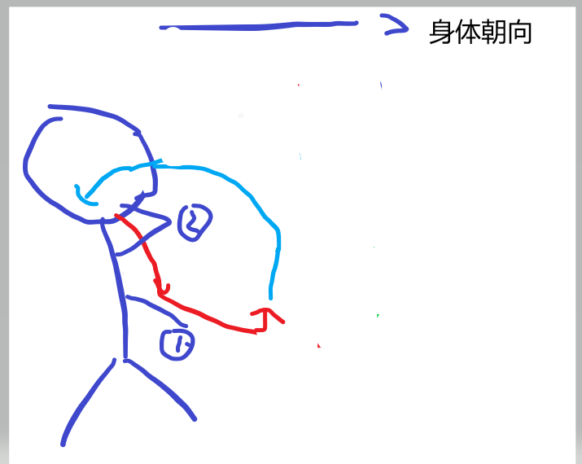
【描述】
发力下划(①)后一直缓慢上升直到肩部(②),然后接下一组
下面列出一个8拍内的操作：
|类型/拍子序号 | 1 | 2 |3 | 4 |5 | 6 |7 | 8 |
| :———— | ————:| :—: |
| 2/8 | 发力下划| 缓慢上升 | 缓慢上升| 缓慢上升 | 发力下划| 缓慢上升 | 缓慢上升| 缓慢上升 |
| 1/8 | 发力下划| 缓慢上升 |缓慢上升| 缓慢上升 |缓慢上升| 缓慢上升 |缓慢上升| 缓慢上升 |
5） 里打：一般用于Amero.
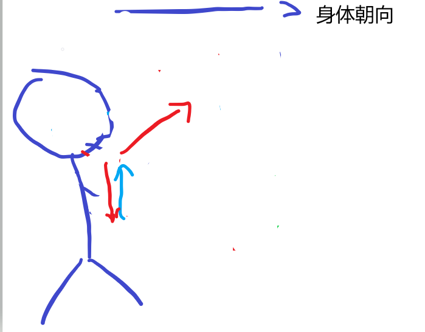
（里打体现了打call的弱拍补足原理）
于是强拍(奇数拍)下划，弱拍（偶数拍）击出
下面列出一个8拍内的操作：
|拍子序号 | 1(强) | 2(弱) |3(强) | 4(弱) |5(强) | 6(弱) |7(强) | 8(弱) |
| :———— | ————:| :—: |
| | 下划并返回| 前击 | 下划并返回| 前击 |下划并返回| 前击 |下划并返回| 前击 |
6） 里跳：带起跳的里打。即向上击出时顺势起跳。
7） 雨刷：国人比较熟悉的应援方式，即手臂左右摆动。一般见于慢歌。（注：一般台上不领起该动作，不自行发起。台上领起该动作则跟着做。）
8） 旋转信号：举起手至顶部，利用腕部发力，旋转棒子。一共4次（合计4拍）
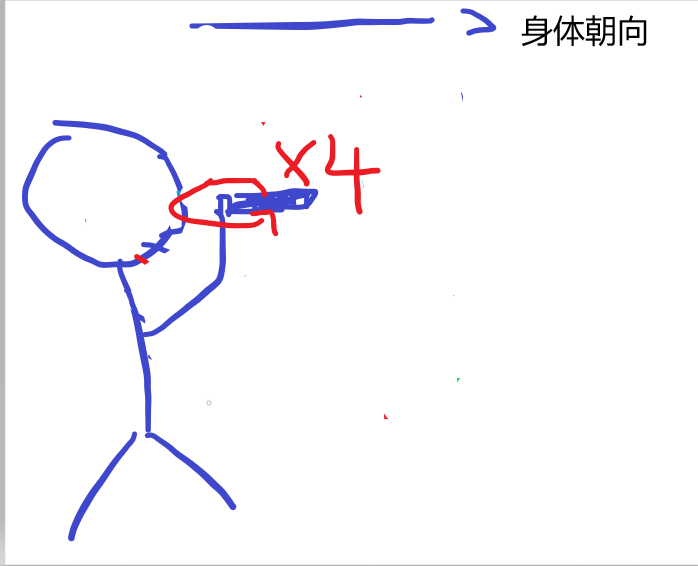
9） 振幅：类似雨刷。不过一般速度较快。一般以肘部为轴心摆动，雨刷是以肩部为轴心。一般来说2拍为一组。即向左、向右划各一拍。
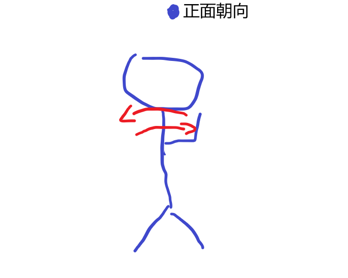
10） PPPH：一般用于Bメロ。极少数歌曲副歌也能用上。
一共4拍。有很多种打法。原版是第1拍左胸前敲一次，第3拍右胸前快敲2次，第4拍右手上击，起跳(演唱会中一般无法起跳。因此可以省略。或身体做个样子就行)。 也有一个版本是，从左旋转棒子到右再上击。 再有一个版本是。第一拍下击，第3拍中间击2次，第四拍上击。（简化版本）
这里仅列出3种版本。
11） OPP：和PPPH的用途相同
方式为前两排喊o~ 后两拍每拍拍手一次
12） 大拍手:完全展开双手，从两侧向头顶拍手。台上不领一般不自行发起。
13） 振り付けコーピー（舞蹈动作copy）：同字面意思。
3.2 基本Call
1)Se no警报：喊seno。
其作用十分广泛，可以用来领起很多东西。最常用的是用来引起GT警报。有时为了加强气势也可以在喊se no前1拍加喊hey。变成Hey!Se no!
seno警报算是一个引导信号。因此新手实际打call时，可注意听这个警报，然后进行接下来的call.
2)GT警报: 喊Hai-Hai- HaiHaiHaiHai.(8拍)
一般用于即将进入Bmero的部分。即表中的Amero冲刺部分。也见于某些曲子的副歌内。有时也用作副歌警报。
3）PPPH：oHai (4拍)。用于Bmero.挥棒方式不再叙述。见3.1. 2拍后，拍打2下
4）OPP：o
进入Bmero的正确方式:
Amero 最后两拍:seno,Amero冲刺:GT警报,Bmero:PPPH/OPP/Bmero成员名call 等
即Seno警报->GT警报->PPPH/OPP/Bmero成员名call
5）旋转信号:fuwa~(发音类似hu第二声)4,挥棒方式不再叙述
6)fufu：第四声，1拍快速喊出。对应挥棒方式为向前上快辉两下。或者快速拍手2次
7)-Hai：在弱拍喊Hai.一般见于前/间/(尾奏) 还有MIX预警
8)uya-Hai/u-Hai：一般见于地下idol的应援。在强拍喊uya/u 在弱拍喊hai.
9)Bmero 成员call:按PPPH/OPP的节奏喊出成员名字
10)*超絶可愛い call：用于Amero. 即喊出 超絶可愛い（chouzetsu kawaii） 【成员名】
(注，如第一章所说。不同的idol前缀使用的词不同，但是喊法一样。这里仅以”超絶可愛い为例子)
一般用在Aメロ1段(4个8拍)的末尾
如表所示:
|8拍序号/拍子序号(里打 里/外) | 1(里) | 2（外） |3（里） | 4（外） |5（里） | 6（外） |7（里） | 8（外） |
| :———— | ————:| :—: |
| 1 | -| - | -| - | -| - | -| - |
| 2 |-| - |-| - |-| - |成员| 名~！ |
| 3 |-| - |-| - |-| - |-| - |
| 4 |cho| ~ |zetsu| kawaii |-| - |成员| 名~！ |
11)副歌内的GT警报：也是GT警报。具体使用方法见第四章
12)歌词call：少数曲子的某个部分可能要一起喊出歌词
13)回应式call
3.3 MIX
【简介】:MIX是用于前奏\间奏的应援方式。一般见于对48G等三次元idol的应援。相比前奏、间奏重复弱拍喊Hai的方式。使用MIX将更带感。（对于以下情况尽量不用MIX： 1.二次元系曲子，有统一应援方案，且应援方案中不使用MIX的 2.应援方案高度统一化的曲子，且方案中不使用MIX（如LoveLive的曲子） 以下任意情况中推荐使用MIX：1.应援对象为三次元idol 2.无统一的应援方案的曲子）下面开始正式介绍MIX
3.3.1 MIX结构
1) MIX整体由三部分组成 ——MIX预警、MIX引导信号、MIX主体
2) MIX预警：1个8拍。喊-Hai-Hai-Hai-Hai (喊于弱拍)
3)MIX引导信号: 引导信号为一个8拍（A~ + (4拍内容)）~yosshaikuzo!(あ～よっしゃ行くぞ!)
①MIX第一引导信号:A
②MIX第二引导信号:A~mouicchoikuzo!(あ～もういっちょ行くぞ！)~Jya~Jya~
③MIX通用引导信号:A
4) MIX主体:每段MIX为2个8拍
① 第一段:-TaiGa-FaiYa-SaiBa-FaiBa-DaiBa-BaiBa-Jya~Jya~
② 第二段:-Tora-Hi-Jinzou-Seni-Ama-SendouKansentobejyokyo~
③ 第三段:-ChaPe-Ape-Kara-Kina-Rara-Tosuke-miuhotosuke
解释：其实第一段为英文，第二段为日文，第三段为阿依努语。翻译过来是虎、火、人造、纤维、海女、振动、化纤飞除去。据说来源于一首诗.
3.3.2 MIX的使用
1]一般情况：当前\间奏正式开始时（注意是正式开始，这个应该还是挺好感悟的），开始喊MIX预警，然后接引导信号、再接MIX主体部分。
下面根据歌曲不同部分具体分析:
①前奏:
MIX预警(极少数歌曲可能不用MIX预警)后用第一引导信号，从第一段MIX开始顺序喊。要注意的是，前奏最多能喊到第二段MIX完。(称为2连MIX，只喊完第一段MIX的称为1连MIX)。从这就会出现一个问题：预警+信号+主体 最多有6个8拍（1+1+22），但是有的曲子前奏很长（8个8拍）。于是就有了*2.5连MIX的出现。喊法是：按正常喊到第二段一半（即Seni）后，从新拉一次第一引导信号，再从第一段MIX开始喊。这样恰好8个8拍（1+1+2+2/2+1+2=8）。一般来说前奏都为偶数个8拍，且不会多于8个8拍
②第一间奏：
预警后，使用第二引导信号，从第二段MIX按顺序喊下去。
③第二间奏：
使用第一引导信号，从第一段MIX开始喊。
【特殊情况】
①第一间奏过短：只有2个8拍的情况——直接接第二MIX，略去预警和引导信号
只有4 个8拍的情况——直接引导信号+第二MIX\第二+第三MIX（视具体曲子而定）
②第一间奏过长：一般不会有这种情况，若有这种情况，第二间奏一般会比较特殊。
这种情况下第一间奏 也使用第一引导信号，从第一MIX开始喊喊到尾。
③ 前奏过短：对于前奏过短的情况一般选择不喊MIX。而使用其他应援方案。或者省略MIX预警
④ 前奏过长：采取一部分先喊-Hai的方式，后面再喊MIX。或者使用其他应援方案
MIX4种版本的使用:
1连版本
|8拍序号/拍子序号 | 1 | 2 |3 | 4 |5 | 6 |7 | 8 |
| :———— | ————:| :—: |
| 1 | -| Hai | -| Hai | -| Hai | -| Hai |
| 2 | A| ~ |~| ~ |よっ| しゃ |行く| ぞー！ |
| 3 | -| TaiGa |-| FaiYa |-| SaiBa |-| FaiBa |
| 4 | -| DaiBa |-| BaiBa |-| Jya |Jya| ~ |
2连版本
|8拍序号/拍子序号 | 1 | 2 |3 | 4 |5 | 6 |7 | 8 |
| :———— | ————:| :—: |
| 1 | -| Hai | -| Hai | -| Hai | -| Hai |
| 2 | A| ~ |~| ~ |よっ| しゃ |行く| ぞー！ |
| 3 | -| TaiGa |-| FaiYa |-| SaiBa |-| FaiBa |
| 4 | -| DaiBa |-| BaiBa |-| Jya |Jya| ~ |
| 5 | -| Tora |-| Hi |-| Jinzou |-| Seni |
| 6 | -| Ama |-| Sendo |Kasen| tobe |Jyo|kyo ~ |
2.5连版本
|8拍序号/拍子序号 | 1 | 2 |3 | 4 |5 | 6 |7 | 8 |
| :———— | ————:| :—: |
| 1 | -| Hai | -| Hai | -| Hai | -| Hai |
| 2 | A| ~ |~| ~ |よっ| しゃ |行く| ぞー！ |
| 3 | -| TaiGa |-| FaiYa |-| SaiBa |-| FaiBa |
| 4 | -| DaiBa |-| BaiBa |-| Jya |Jya| ~ |
| 5 | -| Tora |-| Hi |-| Jinzou |-| Seni |
| 6 | A| ~ |~| ~ |よっ| しゃ |行く| ぞー！ |
| 7 | -| TaiGa |-| FaiYa |-| SaiBa |-| FaiBa |
| 8 | -| DaiBa |-| BaiBa |-| Jya |Jya| ~ |
3连版本
|8拍序号/拍子序号 | 1 | 2 |3 | 4 |5 | 6 |7 | 8 |
| :———— | ————:| :—: |
| 1 | -| Hai | -| Hai | -| Hai | -| Hai |
| 2 | A| ~ |~| ~ |よっ| しゃ |行く| ぞー！ |
| 3 | -| TaiGa |-| FaiYa |-| SaiBa |-| FaiBa |
| 4 | -| DaiBa |-| BaiBa |-| Jya |Jya| ~ |
| 5 | -| Tora |-| Hi |-| Jinzou |-| Seni |
| 6 | -| Ama |-| Sendo |Kasen| tobe |Jyo|kyo ~ |
| 7 | -| ChaPe |-| Ape |-| Kara |-| Kira(na) |
| 8 | -| Rara |-| Tosuke |miu| hou |tusu| ke~ |
3.3.3 倍速MIX
即MIX主体部分以2倍速喊出（每拍一词）多见于地下IDOL的应援。一般使用倍数MIX时不需要引导信号与预警信号。
一般用以补拍。如在Bメロ的后半部分使用。或者用作副歌警报(也就是进入副歌前的一小段)
注意:使用第二段的倍数mix时tobejyo-kyo~不念。也就是说只念tora hi jinzou seni ama sendo ka!sen!
也就是
| | 1 | 2 |3 | 4 |5 | 6 |7 | 8 |
| :———— | ————:| :—: |
| Tora | Hi| Jinzou |Seni| Ama |Sendo| Ka! |Sen!|
3.4 特殊call
这里列出一些特殊Call.可以仅作了解
3.4.1 口上
“口上”翻译过来即“顺口溜”，多用于尾奏。一般见于地下IDOL的应援。AKB Team8的《47の素敵な街》首次将口上引入了对48G的应援。也是目前唯一一首能用口上应援的48G曲子。
口上有很多种。具体可见http://kuroneko096.web.fc2.com/koujyou.html (口上集)。
这里仅介绍最出名的“ガチ恋口上”(真爱顺口溜)。其一共9句话，9个8拍，每个句子一个8拍
言いたいことがあるんだよ （i i ta i ko to ga a ru n da yo）
やっぱり○○はかわいいよ (ya ppa ri xx wa ka wa i i yo)
すきすき大好き、やっぱ好き (su ki su ki daisuki ya ppa su ki)
やっと見つけたお姫様 (ya tto mi tsu ke ta o hi me sa ma)
俺が生まれてきた理由 (o re ga u ma re te ki ta ri yu)
それはお前に出会うため (so re wa o ma e ni de a u ta me)
俺と一緒に人生歩もう (o re to i ssho ni jin sen a yu mo u)
世界で一番愛してる (se kai de ichiban a i shi te ru)
ア・イ・シ・テ・ル (A I SHI TE RU)3.4.2 Faibo Waipa
一般见于地下idol的应援。有时由前奏/间奏/Bmero进入副歌时。会出现“多余”的4拍。这时可用Faipo Wwaipa补足。若“多余出”1个8拍时选择使用倍速mix.
3.4.3 前奏混合mix
这个是新的方式。大概是2018年出现的。
某些歌曲的前奏由两部分组成 先是一段鼓点不算明显、比较缓慢的部分之后进入正常的部分(这里成为正式的前奏)。
这样的前奏时，可以使用前奏混合MIX
使用方式为
一般在进入正式前奏前倒数两8拍按如下使用
|8拍序号/拍子序号 | 1 | 2 |3 | 4 |5 | 6 |7 | 8 |
| :———— | ————:| :—: |
| 1 | miu| hou | tusu | ke | Kasen| tobe | jyo| kyo |
| 2 | JyaJya| — |Faibo| — |Wai| ~ |Pa| ~ |
3.4.4 Ye TaiGa
使用方式同FaiBo Waipa.
3.4.5 Ore~no(俺～の)
同样是用在Amero的call.下面以一段(4拍)的拍数为例
|8拍序号/拍子序号(里打 里/外) | 1(里) | 2（外） |3（里） | 4（外） |5（里） | 6（外） |7（里） | 8（外） |
| :———— | ————:| :—: |
| 1 | -| - | -| - | -| - | -| - |
| 2 |o| ~ |re| ~ |no| ~ |成员| 名~！ |
| 3 |-| - |-| - |-| - |-| - |
| 4 |cho| ~ |zetsu| kawaii |-| - |成员| 名~！ |
3.4.6 Omaegaichiban(お前が一番)
同样是用在Amero的call.下面以一段(4拍)的拍数为例
|8拍序号/拍子序号(里打 里/外) | 1(里) | 2（外） |3（里） | 4（外） |5（里） | 6（外） |7（里） | 8（外） |
| :———— | ————:| :—: |
| 1 | -| - | -| - | o| mae | gai| chiban |
| 2 |o| ~ |re| ~ |no| ~ |成员| 名~！ |
| 3 |-| - |-| - | o| mae | gai| chiban |
| 4 |cho| ~ |zetsu| kawaii |-| - |成员| 名~！ |
四 Call Leader养成计划
4.1.定位技巧:
以下的定位技巧可以帮助定位各种警报所在的位置。不过如能凭乐感喊call，不建议使用以下方式。以下方式可以帮助定位一些凭感觉难以确认的call，还有对不熟悉，甚至没听过的乐曲的call.
(1)短距离定位工具:
①里打：2拍一组，适合定位感受点到喊call点距离较短的情况。比如bmero警报。一般来说很容易识别到Amero最后一个8拍的开头。于是这时只要里打三下，然后击出喊se no即可。
(2)中、长距离定位工具：
MIX. MIX是强大的定位工具，可以定位一切整数个8拍倍数的距离，而且具有精确性（因为各个词都不同，在的位置都是确切的）。下面列出MIX各构成的拍子数：
MIX预警 4下弱拍HAI - 1个8拍
Mix引导信号 -1个8拍
1-MIX -2个8拍
2-MIX -2个8拍
3-MIX -2个8拍
主体部分每喊出一个词是2个8拍。 对于过长的距离（大于8个8拍），还可以采用x.5连的方式。即喊到某段MIX一半时，重拉一遍警报，再重喊MIX。
(3)关于副歌中的GT警报。某些副歌末尾会喊-Hai-Hai Haihaihaihai. 其实许多歌副歌偶数段(一般4个8拍)末尾都可以拉GT警报 。但是一般来说要遵循1.不抢词原则：有唱词时，不抢着拉警报。 一般来说副歌中用上GT警报的情况为：1.最后8拍为尾音拖长 2.最后8拍无词 3.节奏有降落感
五 案例分析
5.1《47の素敵な街へ》
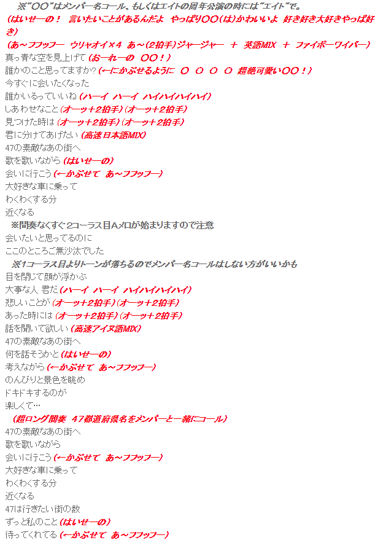
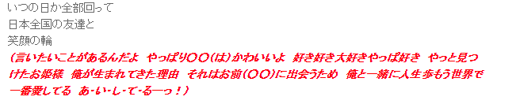
5.1《青春修炼手册》
[0番副歌]
>全程上升气流
凯：跟着我 左手
右手 一个慢动作
右手 左手 慢动作重播
玺：这首歌 给你快乐
你有没有爱上我
源： 跟着我 鼻子
眼睛 动一动耳朵
装乖 耍帅 换不停风格
合：青春有太多
未知的猜测
成长的烦恼算什么
>One Two Three Go!
[前奏]
>Mix:
>-Hai-Hai-Hai-Hai
>A~~~Yosshaikuzo~!
>-TaiGa-FaiYa-SaiBa-FaiBa-DaiBa-BaiBa-Jya~Jya~[Aメロ]
源：皮鞋擦亮 换上西装 #里打
佩戴上一克拉的梦想 #里打
玺：我的勇敢充满电量 #里打
>Hai! Se no!
昂首到达每一个地方 #前挥
>Hai!— Hai!—HaiHaiHaiHai[Bメロ]
凯： 这世界 的太阳 #PPPH*2
因为自信才能把我照亮 #PPPH*2
这舞台 的中央
>-Tora-Hi-Jinzo-seni
合：有我才闪亮
>-Ame-Sendo-
有我才能发着光
Kasentobejyokyo JyaJya~ Faibo! Waipa~~~[第一副歌]
合： 跟着我 左手 右手
一个慢动作
>o~~~ huhu!
右手 左手慢动作重播
>hu~hu~
这首歌 给你快乐
>Se no!
你有没有爱上我
>Hai!— Hai!—HaiHaiHaiHai
跟着我 鼻子眼睛 #平敲
动一动耳朵 #平敲
装乖 耍帅 换不停风格 #平敲
青春有太多 未知的猜测 #前挥
成长的烦恼算什么 #前挥后部分上升气流[第一间奏]
>Mix:
>-Hai-Hai-Hai-Hai
>A~~~Mouicchoikuzo!~!
>-Tora-Hi-Jinzou-Seni-Ama-Sendo-Kasentobejyokyo![Aメロ]
源：经常会想 长大多好 #里打
有些事情却只能想象#里打
玺：想说就说 想做就做#里打
>Hai! Se no!
为了明天的自己鼓掌
>Hai!— Hai!—HaiHaiHaiHai
凯：这世界 的太阳 #PPPH*2
因为自信才能把我照亮 #PPPH*2
这舞台 的中央
>-Tora-Hi-Jinzo-seni
合：有我才闪亮
>-Ame-Sendo-
有我才能发着光
Kasentobejyokyo JyaJya~ Faibo! Waipa~~~[第二副歌]
合： 跟着我左手右手 #平敲
一个慢动作 #平敲
>o~~~ huhu!
右手 左手 慢动作重播 #平敲
>hu~hu~
这首歌 给你快乐 #平敲
>Se no!
你有没有爱上我 #平敲
>Hai!— Hai!—HaiHaiHaiHai
跟着我 鼻子 眼睛#平敲
动一动耳朵#平敲
装乖 耍帅 换不停风格#平敲
青春有太多 未知的猜测#前挥
成长的烦恼算什么 #前挥最后上升气流[Cメロ]
#全程前挥
凯：
向明天 对不起
向前冲 不客气
一路有你 充满斗志无限动力
合：男子汉 没有什么输不起
正太修炼成功的秘籍[降落副歌]
#全程前挥
源： 跟着我左手右手
一个慢动作
玺： 右手左手慢动作重播
凯： 这首歌 给你快乐
你有没有爱上我[第三副歌]
合： 跟着我鼻子眼睛
动一动耳朵
装乖 耍帅 换不停风格
青春有太多 未知的猜测
成长的烦恼算什么